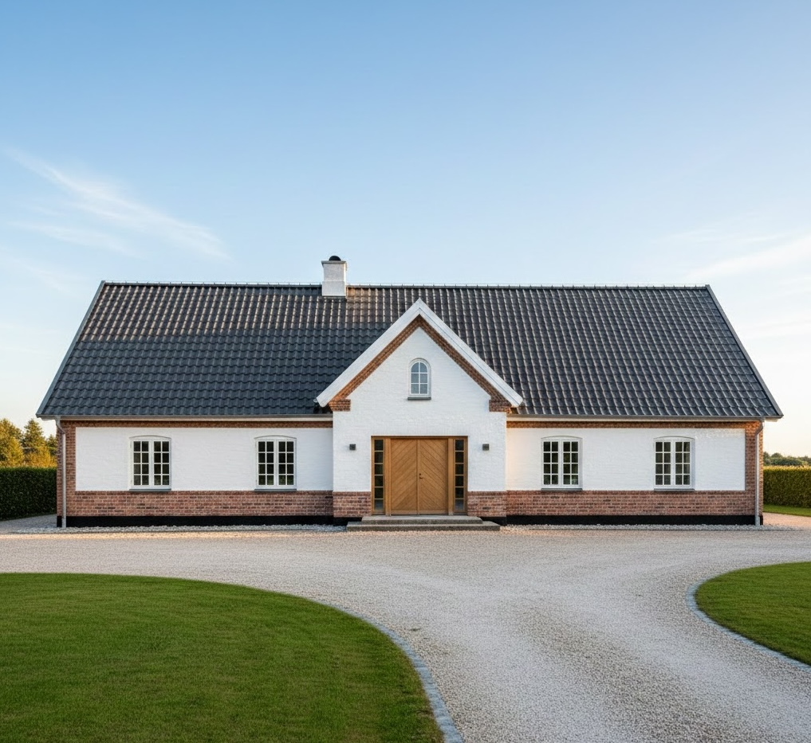

.png)
Fasadrenovering — allt du behöver veta
En sliten fasad sänker husets värde och skyddsförmåga. Lär dig vilka alternativ som finns och hur du planerar renoveringen smart.
När behöver fasaden renoveras?
Fasaden är husets skyddande barriär mot vind, regn och temperaturväxlingar. Här är de vanligaste tecknen på att det är dags att agera.
Sprickor i putsen
Sprickor släpper in fukt som fryser och utvidgas — problemet förvärras snabbt om det inte åtgärdas.
Flagnande färg
Gammal, flagig färg innebär att ytskiktet inte längre skyddar mot fukt och UV-strålning.
Alg- & mögelväxt
Mörka fläckar och grönska på fasaden signalerar fuktrisk — ibland finns problem även bakom ytan.
Viktiga fakta om fasadrenovering
Ekonomi, livslängd och genomförande — här får du en snabb överblick.
Visste du? Genom att tilläggsisolera i samband med fasadrenoveringen kan du minska din energiförbrukning med 20–40 %. Det gör fasadbytet till en investering som betalar sig själv över tid.
Så genomförs en fasadrenovering
Vi tar hand om hela processen — från inledande besiktning till slutbesiktning av det färdiga resultatet.
- 1
Besiktning & fuktmätning
Vi undersöker fasadens skick, mäter eventuella fuktproblem och kartlägger åtgärdsbehov.
- 2
Materialval & offert
Du får en detaljerad offert med förslag på material, färg och isoleringsalternativ anpassade för ditt hus.
- 3
Ställning & skyddning
Vi bygger ställning runt huset och skyddar fönster, dörrar och omgivande ytor.
- 4
Rivning & reparation
Skadad puts och beklädnad tas bort. Underliggande konstruktion repareras och tilläggsisolering monteras vid behov.
- 5
Ny fasadbeklädnad & målning
Ny beklädnad monteras och ytbehandlas — fasaden blir som ny, energieffektivare och skyddad i decennier.
Populära fasadmaterial
Valet av material påverkar utseende, underhåll och kostnad. Här är de vanligaste alternativen.
Träpanel
Tidlöst svenskt val med enkel underhållning. Kräver ommålning var 8–12:e år men ger stor designfrihet i färgval.
Puts & stenmaterial
Elegant och slitstarkt. Passar särskilt bra till moderna hus och är i princip underhållsfritt.
Fasadskivor
Moderna kompositskivor som kombinerar lågt underhåll med slank profil och utmärkt fuktskydd.


Vad kostar fasadrenovering?
Totalpriset beror på fasadens storlek, materialval, eventuell isolering och husets konstruktion.
Normalstor villa
En komplett fasadrenovering på en normalstor villa kostar ofta 150 000–400 000 kr. Enklare åtgärder som ommålning hamnar i nedre spannet, medan byte av material inklusive tilläggsisolering hamnar i det övre.
ROT-avdrag & energistöd
Arbetskostnaden berättigar till ROT-avdrag (30 %, max 50 000 kr/person). Om du kombinerar med energiförbättrande åtgärder kan du även söka energistöd — vi hjälper dig med ansökan.
Tilläggsisolering sparar energi
Genom att tilläggsisolera i samband med fasadrenoveringen kan du minska husets energiförbrukning med 20–40 %. Det ger lägre uppvärmningskostnader under hela fasadens livslängd.
Vanliga frågor om fasadrenovering
Utforska fler guider
Läs mer om tak, solenergi och plåtslageri — allt som skyddar och förädlar ditt hus.

Så vet du att det är dags för takbyte
Varningssignaler och kostnader.

Solceller — en investering som lönar sig
Sänk elkostnaden med solenergi.

Fördelarna med bandtäckning
Hållbart, vattentätt och stilrent.

Plåtslageri — skydda takets detaljer
Beslag som håller i generationer.

Takpanneplåt — modern look, klassisk känsla
Plåtens hållbarhet, pannans estetik.
Ge ditt hus ett ansiktslyft
Boka en kostnadsfri fasadkonsultation
Vi besöker dig, utvärderar fasadens skick och presenterar skräddarsydda lösningar med tydlig prisbild.
Kontakta oss